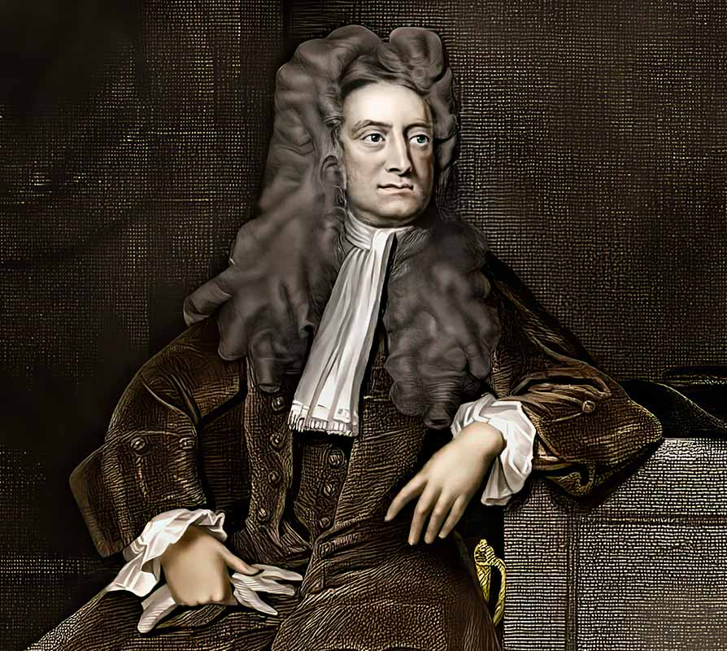
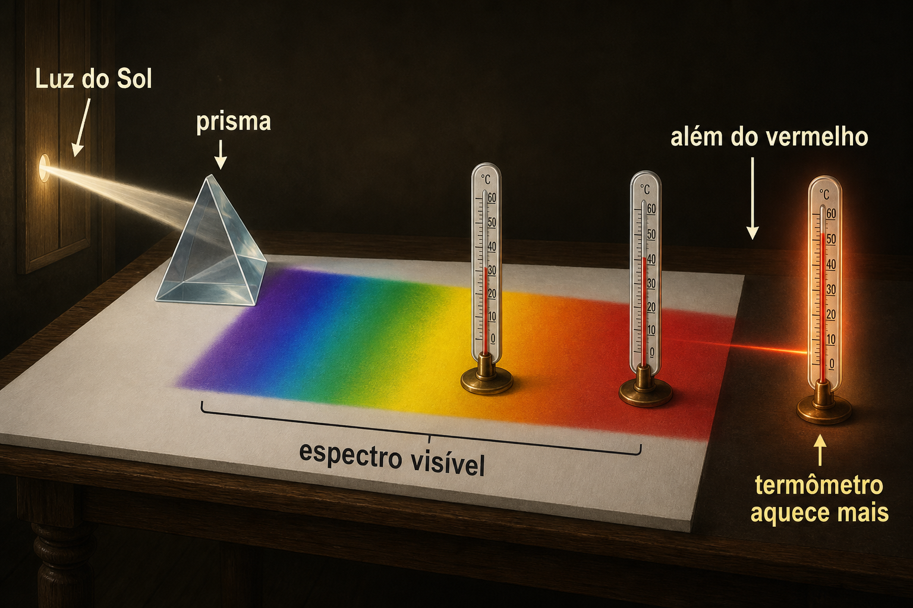
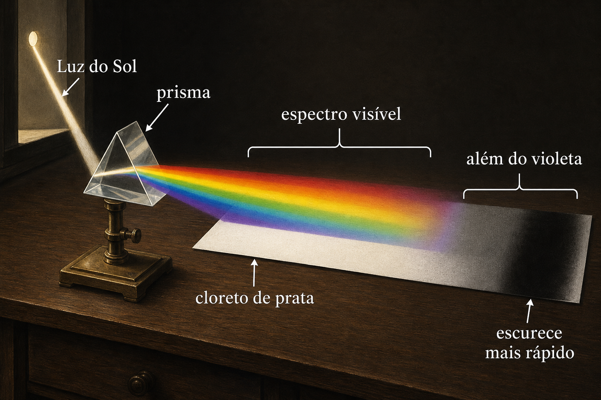
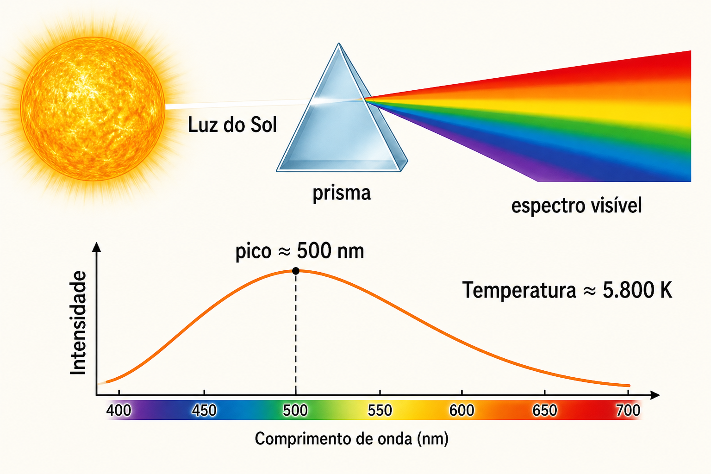
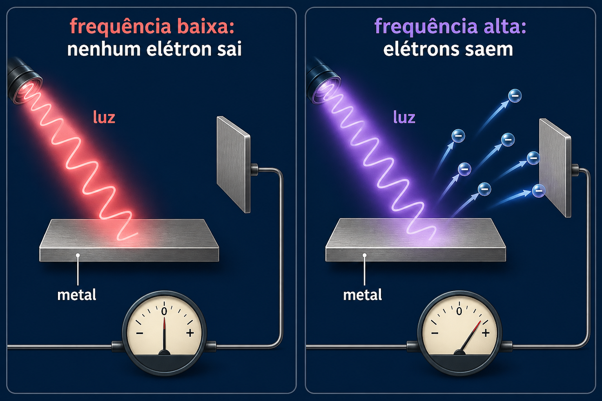
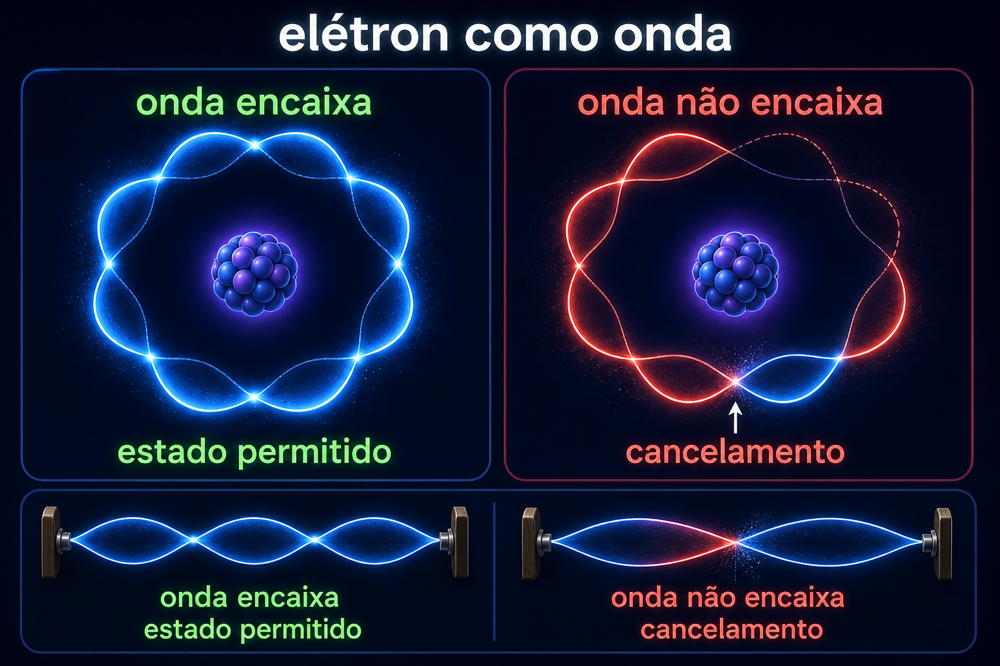
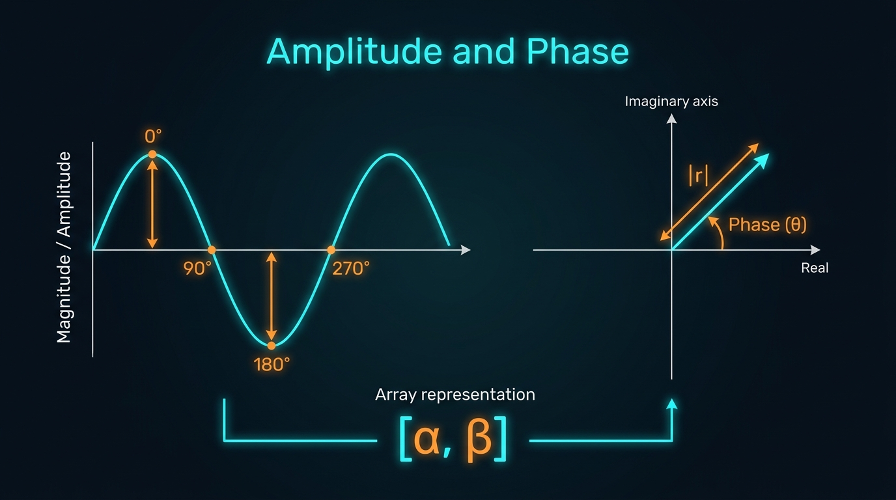
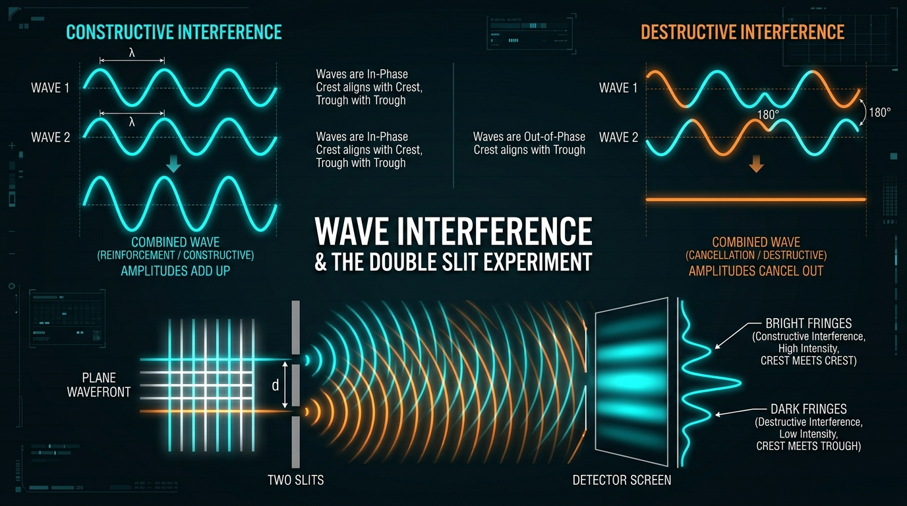

Aula 01 — Panorama: Por que Computação Quântica?
Fundamentos de Computação Quântica — Curso de Extensão
Aula 01 — Panorama: por que computação quântica?
Visão geral: da radiação térmica aos qubits
Objetivos da aula
Ao final deste material, você será capaz de:
- compreender a jornada histórica dos experimentos que forçaram a criação da física quântica;
- entender intuitivamente por que o modelo clássico falhou (a “catástrofe do ultravioleta”);
- visualizar a diferença entre variáveis contínuas (
float) e níveis quantizados discretos (enum/ degraus); - relacionar fótons, saltos quânticos, ondas de matéria e probabilidades;
- interpretar a dupla fenda como a demonstração fundamental de superposição e interferência;
- reconhecer como essas propriedades físicas fornecem as primitivas de processamento de um qubit e de algoritmos quânticos.
💡 Ideia orientadora para Engenharia de Software: a computação quântica não nasceu de uma evolução incremental dos processadores de silício ou da arquitetura de Von Neumann. Ela surgiu da descoberta de que a própria física microscópica opera como um sistema de processamento de informação baseado em probabilidades e interferência. Para programar essas máquinas, precisamos entender as regras desse “novo compilador da natureza”.
1. A luz além do visível: espectro, infravermelho e ultravioleta (1672–1801)
Para entender a computação quântica, a primeira intuição necessária é que a luz não é apenas o que nossos olhos enxergam: ela é uma transmissão contínua de sinais eletromagnéticos em diferentes frequências.
Newton e o espectro visível (1672)
Isaac Newton demonstrou que a luz solar branca não é pura ou elementar, mas uma combinação simultânea de todas as cores do arco-íris.

Ao atravessar um prisma de vidro, cada cor é desviada por um ângulo ligeiramente diferente. O prisma atua como um separador de canais: ele não cria as cores, apenas as distribui no espaço.

William Herschel e o Infravermelho (1800)
Mais de um século depois, em 1800, o astrônomo William Herschel quis medir a quantidade de calor associada a cada cor do espectro.
Ele colocou termômetros sensíveis em cada faixa de cor projetada pelo prisma. À medida que movia o termômetro do violeta para o vermelho, a temperatura subia. Ao posicionar um termômetro além da faixa vermelha visível, em uma região aparentemente escura, o termômetro registrou a maior elevação de temperatura!

Herschel descobriu a radiação infravermelha — provando que existem canais de transmissão de energia completamente invisíveis aos nossos olhos.
Johann Wilhelm Ritter e o Ultravioleta (1801)
Logo em seguida, em 1801, Johann Ritter investigou o outro extremo. Usando tiras de papel com cloreto de prata (\(AgCl\)) — substância que escurece quimicamente na presença de luz —, ele percebeu que a reação química ocorria com força máxima além do violeta visível. Ele acabava de descobrir a radiação ultravioleta.

A velocidade da luz no vácuo é constante (\(c \approx 3 \times 10^8\ \text{m/s}\)). Em um meio material (como vidro), a velocidade varia ligeiramente com a frequência (\(f\)), um fenômeno chamado dispersão. A relação fundamental entre velocidade, frequência e comprimento de onda (\(\lambda\)) é: \[c = \lambda \cdot f\] O índice de refração \(n(f) = c / v(f)\) faz com que frequências mais altas (como o violeta) sofram maior desvio do que frequências mais baixas (como o vermelho).
2. A crise da física clássica e a radiação do corpo negro (1859–1900)
No final do século XIX, os físicos tentaram modelar como objetos aquecidos (como o filamento de uma lâmpada, uma barra de metal em brasa ou o próprio Sol) emitem radiação térmica.
Para criar um modelo teórico limpo, usou-se o conceito de corpo negro: um objeto ideal que absorve toda a radiação que incide sobre ele e, quando aquecido, reemite energia eletromagnética de acordo com a sua temperatura \(T\).
Não confunda corpo negro com matéria escura:
- O corpo negro é matéria comum que interage fortemente com a luz: absorve 100% da radiação incidente e a reemite termicamente ao ser aquecido (o Sol, um filamento de lâmpada ou um forno incandescente são excelentes aproximações).
- A matéria escura (conceito cosmológico moderno) não interage com a força eletromagnética: ela não absorve, não reflete e não emite luz ou radiação alguma, sendo detectada exclusivamente por seus efeitos gravitacionais.
A melhor aproximação experimental de um corpo negro é uma cavidade aquecida com um pequeno furo: a radiação que escapa pelo furo reflete o equilíbrio térmico interno.

Três fatos observados no laboratório:
- Espectro contínuo: o corpo aquecido emite em todas as frequências ao mesmo tempo;
- Quanto mais quente, mais energia total: a potência total irradiada cresce rapidamente com a temperatura (\(I \propto T^4\));
- Mudança de cor com a temperatura: quanto mais quente o objeto, mais o pico de emissão se desloca para comprimentos de onda menores (frequências maiores) — de infravermelho invisível para vermelho escuro, alaranjado, amarelo e finalmente branco incandescente.
O espectro da fotosfera solar (\(T \approx 5.800\ \text{K} \approx 5.500^\circ\text{C}\)) assemelha-se muito ao espectro de um corpo negro, com pico em \(\lambda_{\max} \approx 500\ \text{nm}\) (faixa verde do espectro visível).
A lei de Wien calcula que o pico da fotosfera solar está em \(\lambda_{\max} \approx 500\ \text{nm}\) (verde-azulado). Contudo, o corpo negro solar emite todas as cores do arco-íris simultaneamente em grande quantidade. No espaço, a soma equilibrada dessas cores produz luz branca pura. Na atmosfera da Terra, a luz azul é espalhada pelas moléculas de ar (o que deixa o céu azul), e o feixe solar direto adquire o tom ligeiramente amarelado que vemos ao meio-dia.

Experimente alterar a temperatura e observe a mudança no pico e na intensidade: 👉 Abrir Simulador Interativo do Corpo Negro
A “Catástrofe do Ultravioleta”: o bug da física clássica
Quando os físicos clássicos (Rayleigh e Jeans) tentaram calcular matematicamente a curva do corpo negro usando a física tradicional de Newton e Maxwell, depararam-se com um resultado absurdo:
Pela teoria clássica, a quantidade de energia emitida deveria crescer até o infinito nas frequências ultravioleta e raios-X (\(\lambda \to 0\)).
💻 Analogia para software: foi o equivalente físico a um loop infinito ou overflow: se a física clássica estivesse certa, qualquer lareira, torradeira ou forno na sua casa emitiria instantaneamente uma rajada letal infinita de raios-X e raios gama. Como isso evidentemente não acontece no mundo real, a física clássica continha uma falha estrutural grave.
A física clássica aplicava o Teorema da Equipartição da Energia, atribuindo uma energia média de \(\langle E \rangle = k_B T\) a cada modo de oscilação dentro da cavidade. Como o número de modos de onda estacionária por unidade de volume é proporcional a \(f^2\), a densidade de energia espectral clássica previa: \[u(f)df = \frac{8\pi f^2}{c^3} k_B T \, df\] Integrando para todas as frequências \(f \to \infty\), a energia total calculada divergia para o infinito: \(\int_0^\infty u(f)df = \infty\). Essa falha matemática intransponível é a Catástrofe do Ultravioleta.
3. Max Planck e a Quantização: nascem os degraus discretos (1900)
Em 14 de dezembro de 1900 — considerada a certidão de nascimento da física quântica —, o físico alemão Max Planck propôs uma solução engenhosa para consertar esse “bug” da física clássica.
Planck assumiu que a energia não é contínua. Ela só pode ser absorvida ou emitida em pacotes fechados, os chamados quanta de energia:
\[ E = n h f, \qquad n \in \{0, 1, 2, 3, \dots\} \]
onde:
- \(E\) é a energia;
- \(h \approx 6{,}626 \times 10^{-34}\ \text{J}\cdot\text{s}\) é a constante fundamental de Planck;
- \(f\) é a frequência da radiação;
- \(n\) é um número inteiro discreto.

A analogia da Rampa (float) versus Escada (int)
- Visão clássica (Rampa /
floatcontínuo): você pode parar em qualquer altura intermediária (\(1; 1{,}1; 1{,}234; 1{,}3; 1{,}5; 1{,}75; 2; 2{,}1;\dots\)). - Visão quântica (Escada /
intdiscreto): você só pode estar no degrau 0, 1, 2, 3… Não existem valores fracionários intermediários.
Por que isso resolveu o problema? Para frequências muito altas (\(f\) grande, como no ultravioleta), o degrau básico \(hf\) torna-se excessivamente caro para a energia térmica disponível no ambiente. O sistema não tem “saldo de energia” suficiente nem para pagar o primeiro degrau (\(n=1\)), o que derruba a emissão a zero em altas frequências e elimina o infinito clássico!
Sem níveis discretos de energia, os computadores quânticos modernos não poderiam existir:
Definição dos bits quânticos (\(|0\rangle\) e \(|1\rangle\)): Um qubit em hardware real (como nos chips supercondutores da IBM/Google) utiliza dois níveis discretos de energia (\(E_0\) e \(E_1\)) do circuito quântico.
Controle por pulsos ressonantes: Para alternar um qubit entre \(|0\rangle\) e \(|1\rangle\), o processador envia pulsos de micro-ondas precisamente calibrados com a frequência da fórmula de Planck: \[f_{\text{pulso}} = \frac{E_1 - E_0}{h}\]
Refrigeração criogênica a \(15\ \text{mK}\): Os processadores quânticos operam a temperaturas próximas do zero absoluto para evitar que o “calor ambiente” (radiação térmica de corpo negro) forneça energia indesejada e excite os qubits por engano (gerando erros e perda de coerência).
Ao calcular a energia média considerando estados discretos com probabilidades de Boltzmann (\(P(n) \propto e^{-n h f / k_B T}\)), Planck obteve: \[\langle E \rangle = \frac{hf}{e^{\frac{hf}{k_B T}} - 1}\] Multiplicando pela densidade de modos, surge a famosa Equação de Planck para o Corpo Negro: \[u(f)df = \frac{8\pi h f^3}{c^3} \frac{1}{e^{\frac{hf}{k_B T}} - 1} df\] Para \(f \to 0\), a equação recupera a física clássica de Rayleigh-Jeans; para \(f \to \infty\), o termo exponencial no denominador cresce rapidamente e anula a emissão, reproduzindo com exatidão os dados experimentais.
4. O Efeito Fotoelétrico e o Fóton: a luz como pacote de dados (Einstein, 1905)
Planck acreditava que a quantização era apenas uma propriedade dos átomos nas paredes do forno. Foi Albert Einstein (1905) quem percebeu que a própria luz viaja em pacotes indivisíveis de energia, chamados fótons.
Einstein provou isso ao explicar o efeito fotoelétrico: quando apontamos luz para uma placa de metal em vácuo, elétrons podem ser arrancados da placa.

Três comportamentos que intrigavam os físicos clássicos:
- Filtro de frequência mínima (Threshold / Corte): se você usar luz vermelha de baixa frequência, nenhum elétron é ejetado, não importa quão forte seja o holofote ou quantas horas você deixe ligado. Mas uma luz ultravioleta fraquinha arranca elétrons instantaneamente.
- Instantaneidade: quando a frequência é suficiente, o elétron sai no mesmo instante (\(< 10^{-9}\ \text{s}\)).
- Intensidade versus Energia:
- Aumentar a frequência aumenta a velocidade/energia do elétron ejetado.
- Aumentar a intensidade (brilho) apenas aumenta a quantidade de elétrons ejetados por segundo, mas não a energia de cada um.
💻 Analogia para software: imagine uma catraca que só aceita moedas de 5,00 reais. Se você jogar 1.000 moedas de 1,00 real (luz vermelha intensa), a catraca não abre. Porém, se você inserir uma única moeda de 5,00 reais (um único fóton UV), ela libera a passagem imediatamente!
Sim! A geração de energia solar e a fotografia digital são filhas diretas do efeito fotoelétrico.
- Efeito Fotoelétrico tradicional (metais no vácuo): o fóton de luz atinge a superfície metálica e ejeta o elétron para fora do material.
- Efeito Fotovoltaico (Painéis Solares): o fóton da luz solar atinge um material semicondutor (como o silício) e fornece energia \(hf\) para liberar um elétron preso na estrutura cristalina. Em vez de sair do material, esse elétron passa a circular livremente pelo semicondutor, e a junção interna da placa solar direciona esse fluxo, gerando corrente elétrica contínua.
- Sensores de Câmeras e Smartphones (CMOS/CCD): cada pixel da câmera do seu celular é um minúsculo sensor fotossensível. A luz atinge o pixel, libera elétrons proporcionalmente à quantidade de fótons recebidos, e um conversor analógico-digital transforma essa carga em bits para formar a foto.
Em ambos os casos, a regra quântica de Einstein é implacável: se a frequência da luz incidente for menor que o limiar do material (\(hf < \Phi\)), nenhuma corrente elétrica é gerada, independentemente da intensidade da luz.
A conservação de energia em cada colisão fóton-elétron é descrita por: \[E_{\text{fóton}} = hf\] \[K_{\max} = hf - \Phi\] onde:
- \(K_{\max} = \frac{1}{2}m v_{\max}^2\) é a energia cinética máxima do elétron emitido;
- \(\Phi\) é a função trabalho do metal (a energia mínima necessária para remover o elétron da rede cristalina). Se \(hf < \Phi\), \(K_{\max} < 0\), o que significa que o elétron não tem energia suficiente para se desvincular do metal.
5. O Átomo de Bohr e Saltos Quânticos (1913)
Em 1913, Niels Bohr aplicou as ideias de quantização ao átomo. Pela física clássica, um elétron girando em torno do núcleo deveria irradiar energia continuamente até colapsar no núcleo em frações de segundo.
Bohr postulou que os elétrons só podem habitar órbitas estáveis pré-definidas. Quando um elétron muda de nível de energia:
- Ele não passa por altitudes intermediárias;
- Ele realiza um salto quântico, absorvendo ou emitindo exatamente um fóton com a diferença de energia correspondente:
\[ hf = |E_i - E_f| \]

Pelo postulado da quantização do momento angular (\(L = n \hbar\)), os níveis de energia do átomo de hidrogênio são dados pela fórmula de Rydberg-Bohr: \[E_n = -\frac{13{,}6\ \text{eV}}{n^2}, \qquad n=1, 2, 3, \dots\] As transições para o nível \(n=1\) formam a série de Lyman (ultravioleta), para \(n=2\) a série de Balmer (espectro visível) e para \(n=3\) a série de Paschen (infravermelho).
6. Louis de Broglie: a matéria também é uma onda (1924)
Se as ondas de luz se comportam como partículas (fótons), será que as partículas de matéria (como elétrons) também podem se comportar como ondas?
Em 1924, o francês Louis de Broglie propôs que toda matéria possui uma onda associada:
\[ \lambda = \frac{h}{p} \]
onde \(p = m \cdot v\) é o momento linear da partícula.

Em um elétron, o comprimento de onda é detectável em laboratório: ao disparar elétrons contra uma rede cristalina, eles sofrem difração e interferência, exatamente como ondas de luz!
💡 Do modelo mental clássico ao quântico:
- O que a intuição clássica espera: Se o elétron fosse uma minúscula bolinha de gude sólida, ao atirar milhares de elétrons contra fendas estreitas, deveríamos ver no anteparo atrás apenas duas faixas retas alinhadas com as aberturas.
- O que o laboratório revela: O anteparo registra franjas alternadas de claros e escuros — exatamente o mesmo padrão gerado por ondas na água quando passam pelos pilares de uma ponte!
- Por que isso importa para software: Uma partícula clássica só pode armazenar uma posição rígida (
0ou1). Uma onda possui fase (o momento do seu ciclo: crista ou vale). É a capacidade de manipular essas fases que nos permite criar superposição e interferência lógica entre estados quânticos!
Para uma partícula macroscópica (como uma pessoa de 70 kg caminhando a 1 m/s), o comprimento de onda é \(\lambda \approx 10^{-35}\ \text{m}\), ordens de magnitude menor que as menores escalas atômicas, tornando os efeitos quânticos imperceptíveis no dia a dia. Já para um elétron acelerado por 100 V, \(\lambda \approx 0{,}12\ \text{nm}\), que é da mesma escala do espaçamento entre átomos em um cristal, permitindo a observação direta da difração eletrônica (como em microscópios eletrônicos).
7. Função de Onda, Amplitudes e Probabilidade de Born (1926)
Como modelamos e descrevemos o estado de um sistema quântico no software?
Usamos a função de onda, tradicionalmente denotada por \(\psi\) (lê-se psi). Para quem vem de Engenharia de Software, ela pode ser entendida por meio de três conceitos fundamentais:
1. O que é o “Vetor”? (A Estrutura de Dados)
No software clássico, o estado de um bit é um valor escalar simples:
bit = 0 # ou 1Na computação quântica, o estado de um qubit é modelado por um array/vetor de 2 posições chamado Vetor de Estado (\(\psi\)):
# Vetor de estado de 1 qubit: [amplitude_do_0, amplitude_do_1]
psi = [alpha, beta]- O índice
[0]armazena o coeficiente \(\alpha\), associado ao estado \(|0\rangle\); - O índice
[1]armazena o coeficiente \(\beta\), associado ao estado \(|1\rangle\).
2. O que é a “Amplitude”? (A força da oscilação)
Existe uma relação direta e literal com a amplitude da onda física:
- Na onda mecânica (som ou água): a amplitude é a altura da crista ou a profundidade do vale (a intensidade/volume da oscilação).
- Na função de onda quântica: a amplitude \(\alpha\) (ou \(\beta\)) é a intensidade com que aquela alternativa oscila no espaço quântico.
Quanto maior a amplitude de um estado, maior será a probabilidade de medirmos aquele resultado. Pela Regra de Born (1926), a probabilidade física observável é o quadrado do módulo da amplitude:
\[\text{Probabilidade de obter 0} = |\alpha|^2 \qquad\qquad \text{Probabilidade de obter 1} = |\beta|^2\]
3. O que é a “Fase”? (O momento do ciclo)
A fase (\(\theta\)) indica em qual ponto do ciclo a onda se encontra naquele instante:
- Fase \(0^\circ\) (\(+1\)): a onda está no topo máximo da crista (positiva);
- Fase \(180^\circ\) ou \(\pi\) (\(-1\)): a onda está no fundo máximo do vale (negativa);
- Fase \(90^\circ\) (\(+i\)) ou \(270^\circ\) (\(-i\)): a onda está no ponto neutro de cruzamento (números imaginários).

💡 A mágica da fase no algoritmo: Se calcularmos a probabilidade isolada de uma crista (\(|+0{,}7|^2 = 0{,}5\)) e de um vale (\(|-0{,}7|^2 = 0{,}5\)), ambas resultam em \(50\%\). Contudo, quando duas ondas colidem dentro de um algoritmo, a fase determina se elas vão somar suas forças (\(+0{,}7 + 0{,}7 = 1{,}4\)) ou se anular mutuamente (\(+0{,}7 - 0{,}7 = 0\))!
4. Exemplo Completo Passo a Passo: da Função de Onda à Medição
Considere um qubit preparado em uma superposição balanceada:
\[ |\psi\rangle = \frac{1}{\sqrt{2}}|0\rangle + \frac{1}{\sqrt{2}}|1\rangle \]
Passo 1: Construir o vetor de amplitudes em código
Cada amplitude vale \(\frac{1}{\sqrt{2}} \approx 0{,}7071\):
Passo 2: Calcular as probabilidades com a Regra de Born (\(|\psi|^2\))
Elevamos o módulo de cada amplitude ao quadrado para obter as probabilidades clássicas de leitura:
Passo 3: Conservação probabilística (Normalização)
Como a leitura do qubit sempre precisa entregar algum resultado, a soma das probabilidades é sempre exatamente igual a 1 (100%):
\[ |\alpha|^2 + |\beta|^2 = 0{,}5 + 0{,}5 = 1{,}0 \]
Passo 4: Primeiro Circuito Quântico com Cirq em Tempo Real
Agora vamos preparar esse mesmo estado em um qubit real usando o motor Cirq executado diretamente no navegador via Pyodide:
- Antes da medição, o sistema quântico evolui como uma onda contínua e determinística (Equação de Schrödinger);
- No momento da medição (
read()), o sistema colapsa e entrega um resultado discreto (0ou1); - Ao executar o algoritmo milhares de vezes (shots), a contagem estatística dos resultados converge exatamente para a distribuição prevista por \(|\psi|^2\).
8. A Dupla Fenda: Cristas, Vales e Interferência na prática
O experimento da dupla fenda com partículas individuais é o coração conceitual da computação quântica.
Imagine jogar duas pedras ao mesmo tempo na água de uma piscina: cada pedra cria ondas circulares com cristas (altos) e vales (baixos). Conforme essas ondas viajam e se cruzam a caminho da borda, elas percorrem distâncias ligeiramente diferentes:

Como a geometria das ondas gera as franjas no anteparo:
- Crista encontra Crista (Interferência Construtiva): Onde a distância percorrida a partir das duas fendas é rigorosamente igual (como no centro do anteparo), as ondas chegam em sincronia de fase. A crista de uma soma-se à crista da outra (\(+1 + 1 = +2\)), a amplitude dobra e a probabilidade de impacto fica máxima \(\rightarrow\) surge uma franja clara/brilhante.
- Crista encontra Vale (Interferência Destrutiva): Em pontos ligeiramente deslocados, a onda de uma fenda precisa viajar meia volta de onda a mais (\(\lambda / 2\)) do que a outra. A onda da Fenda 1 chega no seu ponto mais alto (+1), mas a onda da Fenda 2 chega exatamente no seu vale (-1). Elas se cancelam perfeitamente (\(+1 + (-1) = 0\)) \(\rightarrow\) a probabilidade de impacto torna-se ZERO \(\rightarrow\) surge uma franja escura/proibida, onde nenhum elétron consegue bater!
Quando duas fendas estão abertas, não somamos as probabilidades clássicas. Em vez disso, somamos as amplitudes de onda:
\[ \psi_{\text{total}} = \psi_1 + \psi_2 \]
A probabilidade resultante no detector é:
\[ P = |\psi_1 + \psi_2|^2 = |\psi_1|^2 + |\psi_2|^2 + 2\text{Re}(\psi_1^* \psi_2) \]
O termo cruzado \(2\text{Re}(\psi_1^* \psi_2)\) é o termo de interferência quântica.
Dispare elétrons um a um e veja como impactos pontuais acumulam o padrão de franjas: 👉 Abrir Simulador 3D da Fenda Dupla com Elétrons
Mesmo enviando um único elétron por vez, cada elétron interfere com todas as alternativas de trajetória possíveis antes de colapsar como um único ponto no anteparo.
9. Da Dupla Fenda ao Qubit: as primitivas da Computação Quântica
Tudo o que vimos até aqui converge diretamente para a unidade elementar de processamento quântico: o qubit.
Enquanto um bit clássico armazena obrigatoriamente 0 ou 1, um qubit é um sistema quântico de dois níveis que pode estar em uma superposição coerente:
\[ |\psi\rangle = \alpha |0\rangle + \beta |1\rangle, \qquad \alpha, \beta \in \mathbb{C} \]
com a restrição de normalização probabilística:
\[ |\alpha|^2 + |\beta|^2 = 1 \]
Ao ler o qubit (medição):
- Obtemos o bit clássico
0com probabilidade \(|\alpha|^2\); - Obtemos o bit clássico
1com probabilidade \(|\beta|^2\).
Correspondência direta entre a física e a computação:
| Fenômeno Físico (Fenda Dupla) | Conceito Computacional (Qubit) |
|---|---|
| Alternativa do caminho pela Fenda 1 | Estado da base \(|0\rangle\) |
| Alternativa do caminho pela Fenda 2 | Estado da base \(|1\rangle\) |
| Amplitude complexa de cada caminho | Coeficientes \(\alpha\) e \(\beta\) |
| Diferença de fase óptica entre caminhos | Fase relativa do estado quântico (\(e^{i\phi}\)) |
| Franjas de interferência no anteparo | Efeito das portas lógicas quânticas unitárias |
| Impacto pontual no detector | Resultado clássico de uma instrução de medição |
Portas Quânticas: compilando a interferência
Em um computador quântico, não usamos lasers e fendas físicas no ar. Aplicamos portas quânticas (matrizes unitárias) que rotacionam as amplitudes e alteram as fases dos qubits.
Por exemplo, a porta Hadamard (\(H\)) coloca um estado \(|0\rangle\) em superposição uniforme:
\[ H|0\rangle = \frac{|0\rangle + |1\rangle}{\sqrt{2}} \]
Se aplicarmos a porta Hadamard novamente sobre essa superposição:
\[ H \left( \frac{|0\rangle + |1\rangle}{\sqrt{2}} \right) = |0\rangle \]
O estado \(|1\rangle\) foi completamente eliminado por interferência destrutiva (\(+1/2 - 1/2 = 0\)), enquanto o \(|0\rangle\) foi amplificado por interferência construtiva (\(+1/2 + 1/2 = 1\)).
🚀 O grande segredo dos algoritmos quânticos (Shor, Grover, QPE): criar circuitos lógicos que façam as respostas erradas de um problema sofrerem interferência destrutiva (cancelando-se) e a resposta correta sofrer interferência construtiva (emergindo com quase 100% de probabilidade na medição).
10. Sequência sugerida para apresentação em aula
- Abertura histórica: iniciar com a dispersão da luz por Newton, Herschel (termômetros no infravermelho) e Ritter (cloreto de prata no ultravioleta).
- A crise clássica: apresentar a cavidade de corpo negro, a lei de Wien e a falha drástica da física clássica na catástrofe do ultravioleta.
- A revolução do Quanta: introduzir a hipótese de Planck (\(E = nhf\)) e a analogia da rampa versus escada.
- Fótons e saltos quânticos: mostrar a explicação de Einstein para o efeito fotoelétrico (\(hf = K_{\max} + \Phi\)) e os níveis discretos do átomo de Bohr.
- A matéria como onda: introduzir a dualidade de De Broglie (\(\lambda = h/p\)) e a função de onda com a probabilidade de Born (\(|\psi|^2\)).
- A dupla fenda interativa: explorar o simulador 3D disparando elétrons individuais até a formação das franjas de interferência.
- Ponte para a computação quântica: correlacionar os dois caminhos da fenda aos estados \(|0\rangle\) e \(|1\rangle\), e a porta Hadamard como manipulador de interferência.
Resumo e síntese da trajetória
A evolução conceitual percorrida nesta aula fundamental estrutura-se na seguinte linha do tempo:
\[\begin{aligned} \text{Radiações Invisíveis (1800)} &\longrightarrow \text{Corpo Negro e Catástrofe UV} \longrightarrow \text{Quantização de Planck (1900)} \\ &\longrightarrow \text{Fótons de Einstein (1905)} \longrightarrow \text{Níveis de Bohr (1913)} \\ &\longrightarrow \text{Ondas de De Broglie (1924)} \longrightarrow \text{Função de Onda e Born (1926)} \\ &\longrightarrow \text{Dupla Fenda e Superposição} \longrightarrow \text{Qubits e Computação Quântica} \end{aligned}\]
O elemento central unificador é a amplitude quântica de probabilidade. Capaz de assumir fase, superpor-se e interferir, ela transforma fenômenos físicos fundamentais no hardware de processamento de informação mais poderoso do século XXI.